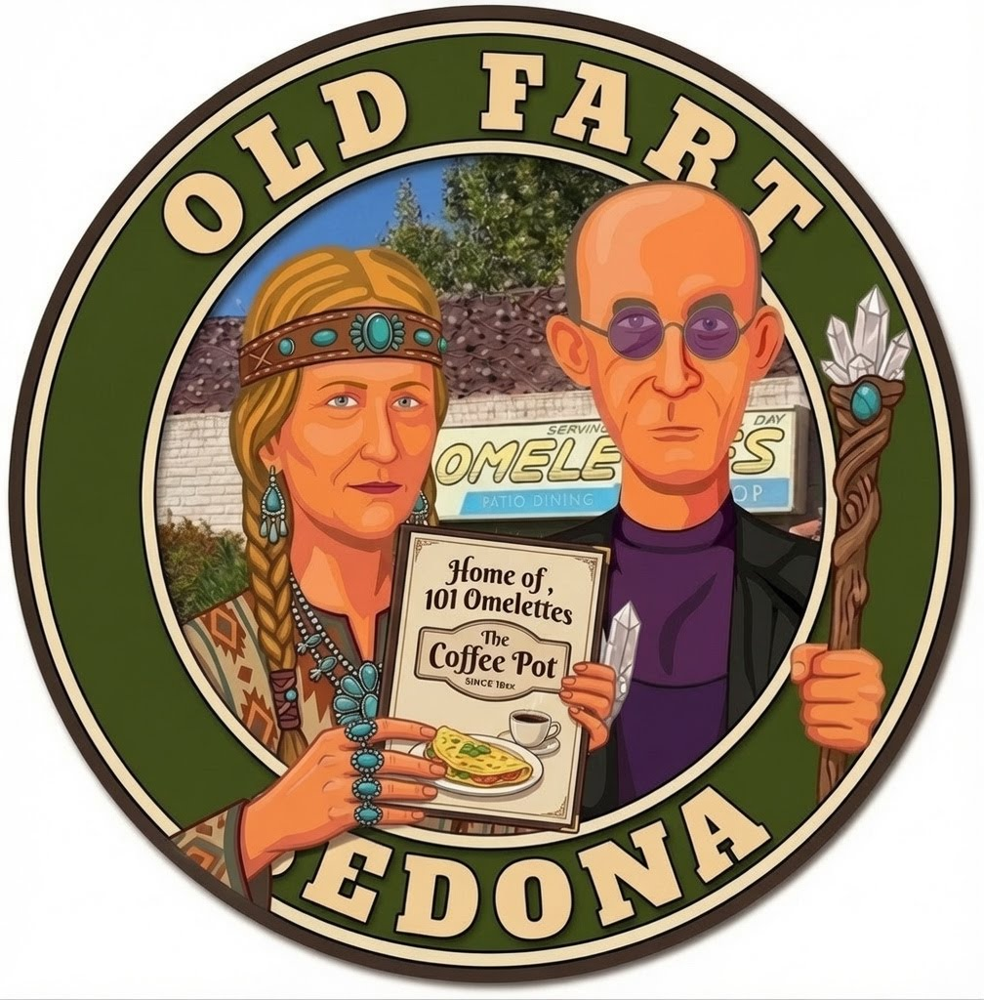
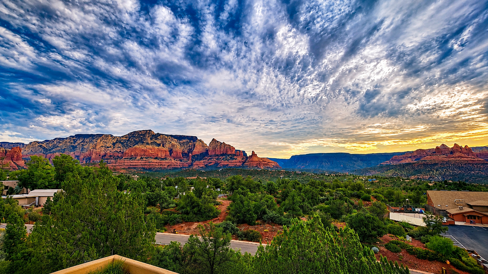

☕ Breakfast
Coffee Pot Restaurant
Home of 101 Omelettes.

🍳 Breakfast & Lunch Menu
Sedona • Wednesday, August 4, 2026
Welcome to Sedona.
Home of vortexes...
Red Rocks...
Pink Jeeps—though not this trip...
and, perhaps most importantly...
101 omelettes.
After three days on the move, today is intentionally different.
No long drives.
No alarm clocks.
No marathon sightseeing.
Just enjoy one of Arizona's most beautiful places at whatever pace feels right.

Coffee Pot Restaurant
Home of 101 Omelettes.

🍳 Breakfast & Lunch MenuThe Hudson
Reservation: 7:00 p.m.
The best deck in town—with an open dining room, lively central bar, cozy lounge, and a menu that covers everything from salads and burgers to fish, chicken, ribs, and steak.
🍽️ The Hudson MenuSedona, Arizona
Home for two nights—with the red rocks outside and the pool, hot tub, patio, and absolutely no reason to rush anywhere.
There is absolutely nothing wrong with sitting on a patio...
holding a cold drink...
staring at red rocks...
and accomplishing...
absolutely nothing.
In fact...
that's kind of the point.
We won't be in the car for long enough to care.
That's kinda the point.
Tomorrow...
we visit that giant hole in the ground.
I'll be there to help pick your jaws up off the deck when you first walk up to the South Rim...
and we'll celebrate another successful orbit around the sun for Bill Vanko.
Congratulations.
You've made it four days without a major incident.
Tonight we're eating somewhere classy.
If there are dinner rolls...
look before touching.
We've already covered this once.
There will not be a second warning.